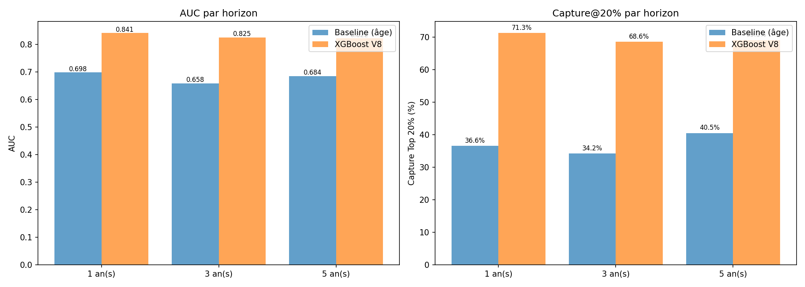
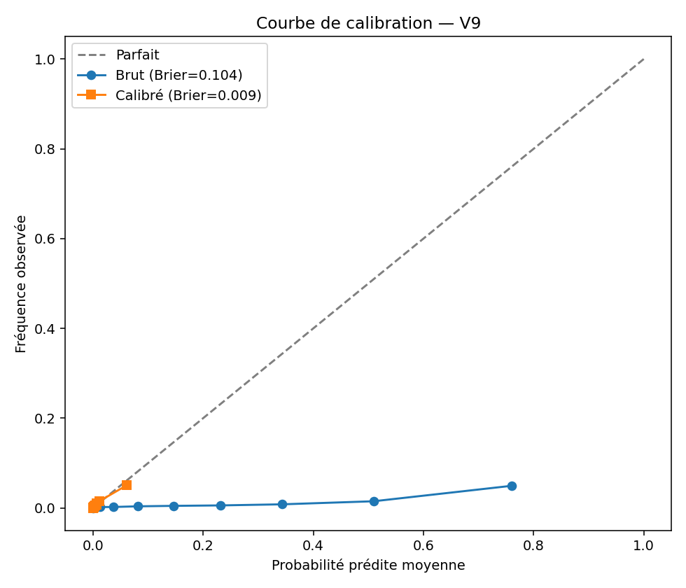
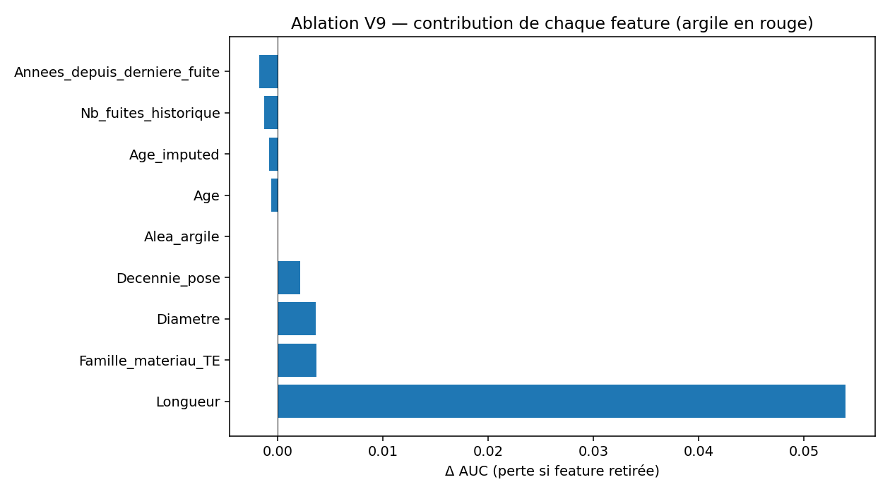
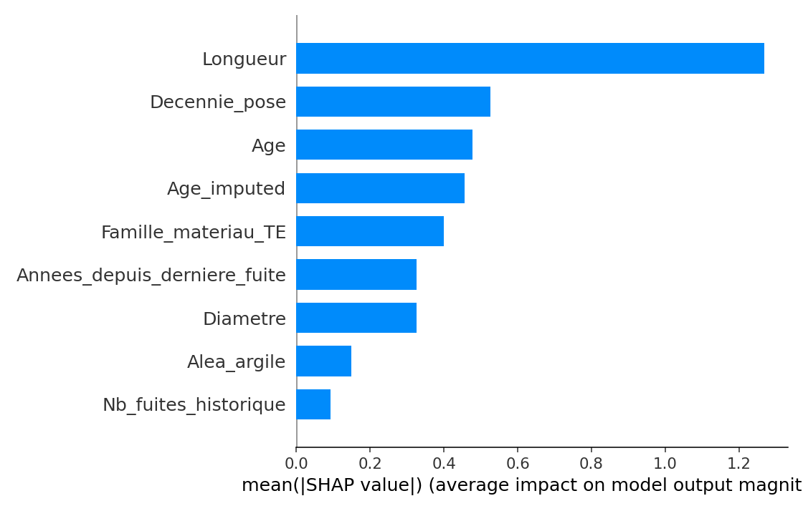
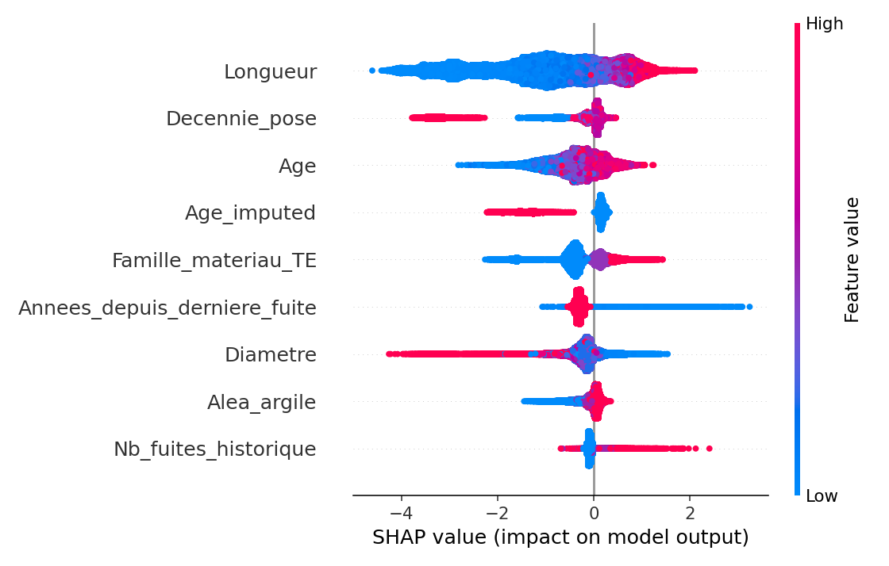
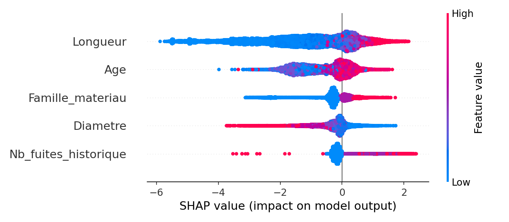

Ce rapport compare les performances des modèles V8 et V9 pour la prédiction des fuites/casses sur le réseau, en mettant l'accent sur les métriques de classification, l'importance des variables et l'apport des nouvelles features (notamment l'aléa argile dans V9).
| Fenêtre | AUC V8 | AUC âge V8 | Gain V8 | Capture top 20% V8 | AUC V9 | AUC âge V9 | Gain V9 | Capture top 20% V9 |
|---|---|---|---|---|---|---|---|---|
| 2012-2015 | 0.885 | 0.666 | 0.219 | 80.4% | 0.863 | 0.685 | 0.178 | 74.0% |
| 2015-2018 | 0.865 | 0.685 | 0.180 | 76.2% | 0.837 | 0.686 | 0.151 | 70.5% |
| 2018-2021 | 0.825 | 0.658 | 0.167 | 68.6% | 0.823 | 0.687 | 0.136 | 67.9% |
Moyenne AUC V8 ≈ 0.86 | Moyenne AUC V9 ≈ 0.84
Gain ML vs âge : V8 ≈ +0.19 | V9 ≈ +0.15






| Feature | SHAP |
|---|---|
| Longueur | 1.45 |
| Age | 0.73 |
| Famille_materiau | 0.38 |
| Diametre | 0.38 |
| Nb_fuites_historique | 0.22 |
| Feature | SHAP |
|---|---|
| Longueur | 1.27 |
| Decennie_pose | 0.53 |
| Age | 0.48 |
| Age_imputed | 0.46 |
| Famille_materiau_TE | 0.40 |
| Annees_depuis_derniere_fuite | 0.33 |
| Diametre | 0.33 |
| Alea_argile | 0.15 |
| Nb_fuites_historique | 0.09 |
| Feature retirée | Perte AUC |
|---|---|
| Longueur | 0.054 |
| Famille_materiau_TE | 0.004 |
| Diametre | 0.004 |
| Decennie_pose | 0.002 |
| Alea_argile | 0.00007 |
L'apport de l'aléa argile est mesuré mais modeste (ΔAUC ≈ 0.00007).